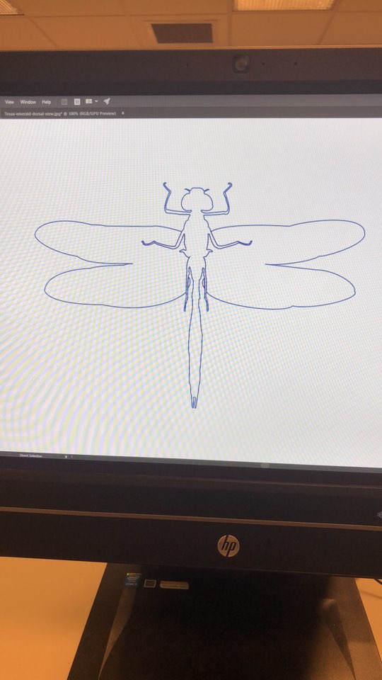

P O R T F O L I O
I took Introduction to Art during my first year in college and I wanted to share with you some of my projects.
A1: color wheel and palette

COLOR ON FACE
2018
Materials: face paint
Tools: photoshop
Description:
"Color is used in many different contexts.
I thought it would be interesting to see the interplay between this artwork and race."
NATURAL
2018
Tools: iphone 8plus camera & photoshop
Description:
"I thought it would be interesting to find complementary colors in the sky at different times during the day."
A2: Collaborative Street Art

TEAMWORK
2018
Materials: spray paint
Tools: illustrator & laser cutter
Description:
As a class, we spray painted under the tunnels of Ho building at Colgate University.
Individually, we each used Adobe illustrator to trace and design templates to use for spray painting.
A3: Insider vs Outsider
STUCK INSIDE
2018
Tools: photoshop
Description:
Using photoshop, I created a collage of 11 photos below.

A4: Detourment
RULERS?
2018
Materials: wooden rulers, black paint, hot glue, tape, crayons, paper
Tools: illustrator, laser cutter
Description:
Using illustrator, I created templates and designs for the rulers.
Then, I used the laser cutter to cut the rulers into different shapes and designs.
I assembled them using hot glue and glue.
Lastly, I had my colleages draw pictures using these rulers.
Sold for $110.